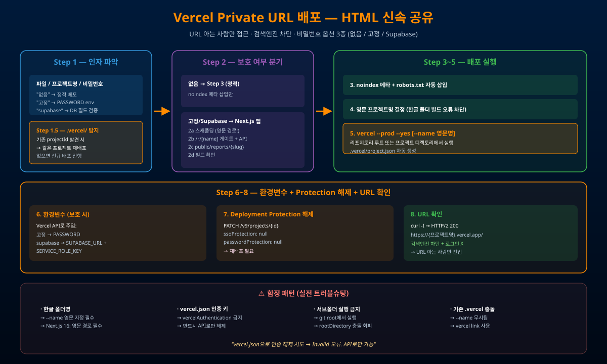

noindex 메타 + robots.txt + Deployment Protection 해제까지 자동화하여 "URL을 아는 사람만 접근, 검색엔진은 차단"이라는 사적 공유 모드를 1분 안에 실현한다. 옵션으로 비밀번호 게이트(고정 / Supabase DB 필드)까지 지원한다.

정적 HTML 그대로 배포. URL만 알면 진입. noindex + robots.txt로 검색엔진 차단.
Next.js 앱 자동 스캐폴딩. PASSWORD 환경변수 1개로 게이트. middleware로 /reports/* 보호.
예: 생년월일 8자리 매칭. 슬러그 → DB id 매핑 → 필드 비교. API route + cookie 인증.
| 항목 | GitHub Pages | Vercel (본 스킬) |
|---|---|---|
| 검색엔진 노출 | 공개 인덱싱 | noindex 차단 |
| 접근 방식 | 공개 URL | URL 아는 사람만 |
| 비밀번호 옵션 | 없음 | 없음 / 고정 / Supabase 3종 |
| 한글 폴더명 | 문제 없음 | --name 영문 지정 필요 |
| 배포 방식 | git push → 자동 빌드 | vercel --prod --yes 직접 |
/ vercel-private-url-배포
파일: C:/path/to/index.html
프로젝트명: my-project-name
비밀번호: 없음 | 고정 | supabase
# 한글 폴더 + 인증 해제까지 1줄 (실전):
cd "G:/내 드라이브/.../AX프로젝트"
vercel --prod --yes --name ax-project-proposals
# 401 발생 시 API로 Protection 해제:
curl -X PATCH "https://api.vercel.com/v9/projects/${PROJECT_ID}?teamId=${TEAM_ID}" \
-H "Authorization: Bearer ${TOKEN}" \
-d '{"ssoProtection":null,"passwordProtection":null}'
vercel --prod --yes
| 증상 | 원인 | 해결 |
|---|---|---|
| "Project name must be lowercase" | 대문자/특수문자/한글 | --name lowercase-only |
| Next.js 빌드 실패 | 한글 경로 (Turbopack) | 영문 경로 복사 후 빌드 |
| 401 인증 보호 | Pro/Team 플랜 기본값 | Vercel API PATCH로 해제 |
| vercel.json Invalid | vercelAuthentication 키 | API로만 해제 (vercel.json 금지) |
| --name 무시됨 | 기존 .vercel/project.json | rm -rf .vercel/ 후 재시도 |
| 프로젝트 | URL | 특징 |
|---|---|---|
| Sunny AI Magic 50 | sunny-ai-magic-50.vercel.app | 본 슬라이드쇼 (비밀번호 없음) |
| ax-project-proposals (2026-03-16) | ax-project-proposals.vercel.app | 한글 폴더 + API Protection 해제 |
| pf-report (2026-03-18) | pf-report.vercel.app/r/jungwono | Supabase 생년월일 8자리 검증 |
| election-map-pages (2026-03-14) | election-map-pages-…vercel.app | GitHub Pages 대체 |
| #26 유튜브 영상 제작 | 영상 외 콘텐츠 신속 공유 인프라 |
| #25 미니 풀스택 5시간 | 완성된 결과물의 즉시 배포 채널 |
| #50 사내 AI 에이전트 하우스 | 인덱스 페이지·산출물 외부 공유 |